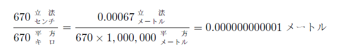
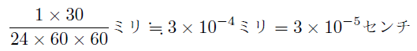

初めから汚い話で恐縮であるが、琵琶湖へ小便をしたら、水嵩はどれだけ変るかという問題がある。
これは一寸面白い問題であって、日本の政治家ならば、大抵の人は「どれだけかというくわしいことは技術者に計算させればすぐわかるが、とにかく極めて少量ではあるが、小便の分量だけは水嵩が増す」と答えるであろう。如何にもそのとおりのように聞える。しかしこれが一番の愚答なのである。
琵琶湖の面積は六七〇平方キロ余りある。一回の小便の量を計算に便利のために、約六七〇立方センチとする。少しくらいこれより多くても少なくても、結論にはかわりはない。これだけの水量が加わるとすると、六七〇立方センチを六七〇平方キロで割った数だけ水嵩が増すことになる。それならば「極めて少量ではあるが幾分は水嵩が増す」という答でいいではないか、ということになりそうである。しかしそう簡単には言えないので、こういう場合に、何か返答をしようと思ったら、割算をやってみなければならない。
その割算は極めて簡単である。

最初の
蒸発量は天候によって広い範囲に変ることはもちろんである。大ざっぱにみて、毎日の気象台で測られている蒸発量の平均を、一ミリ余りとみる。湖面からの蒸発は、陸上で蒸発計で測られる値の八割くらいとみられるので、話を簡単にするために、一日に一ミリ蒸発するとする。これは非常に少なくみての話である。しかし僅か一日一ミリの蒸発でも、さっきの百億分の一センチとはひどいちがいである。小便をするには、時間がかかる。それを三十秒かかったとすると、その三十秒間の蒸発量は

３×10−５センチ、即ち十万分の三センチである。これを前の百億分の一センチとくらべてみると、約三十万倍に当る。小便で増す水嵩よりも、蒸発で減る水嵩が三十万倍も大きいとすると、「極めて少量ではあるが、いくらかは増す」という答がまちがっていることは明らかである。
しかしこういう抗議が出るかもしれない。蒸発はどうせあるのだから、蒸発で減る分量の極く一部が小便で補われて、「幾分かは減り方が少なくなる。それがいくらかは増すという意味である」という議論である。しかしそれも困るのであって、今言った蒸発量は平均の値である。本当の蒸発量は、気温、風、湿度、日射などによって著しく変化する。その時その時の気象条件によって、一万倍から百万倍くらいの間に変化するので、その平均が大体三十万倍くらいになるのである。それで今の例は、一日に一万円から百万円の範囲で損をしながら、一円もうけた場合、財産がどうなるかというのと同じ問題になる。損をする額が非常に大きくしかも一定でないのであるから、一円だけ損の仕方が少ないとも言えないわけである。
こういうとまた次のような抗議が出るかもしれない。「琵琶湖に小便というような問題に対しては、何もそういう実際問題として答えているわけではない。蒸発だの河水の流入流出だのが全然ない場合を仮定して、そういう理想的な場合について、理論的にいって、その分量はいくら少なくても、とにかく小便の分量だけ水嵩が増すと言っているのだ」という論である。ところがそういう理論的な問題としたら、この答案は、一層いけないのである。
というのは、百億分の一センチという長さは、理論的にいっても、意味のない数字である。それは水の分子の大きさよりもずっと小さい数字なのである。実は分子どころではなく、それを構成している原子よりもさらに小さいので、問題にならない話である。水の分子は酸素原子一つと、水素原子二つとから出来ている。その水素原子はさらに原子核と外電子とから成っているので、その両者の間隔、即ち原子の大きさが、大体10−８センチ、即ち一億分の一センチである。前に挙げた百億分の一センチというのは、この原子の大きさのさらに百分の一なのである。そういう量が、水嵩という言葉には、全く意味が無いことは明白であろう。
それでこの問題は、実際的にはもちろん、理論的にも成り立たない問題である。即ち水嵩ということを問題にする以上、問題自身が意味のないものなのである。少しでも物が加わった以上、どんなに少なくとも少しは増すという常識論の誤謬は、量の観念が無いところからきている。
この例は、一つの笑い話としてはなかなか面白い話である。ところがこれと全く同じような話を、政府の責任者が、大真面目で言っている場合が、かなりしばしばあるように思われる。承知して言っているのならまだしも、本気にそういうふうに考えている場合もあるらしい。量的や数的の観念を持たない人の考えは、あぶなっかしいことおびただしい。
戦争中の話には、この系統のものが数えきれないくらいあった。その中で比較的罪のない例をあげてみよう。東京で防火用の砂を用意せよという布告が出たことがある。防衛司令部というような
結構な命令のようであるが、この命令は実は一寸困るのである。砂は海岸か河原にしかないものである。東京市中にないものをあらしめるには、運んで来るより外に方法は絶対にない。それを運ぶにはたいへんな輸送力が要るから、土でもいいのではないかという疑問が出る。生産用の輸送力を犠牲にしてまで砂を運ぶのは可笑しい。そういうことを一寸洩らすと、大変なことになる。だからインテリは時局の認識が足りなくて困る、土では巧く撒けないのだ、砂と言われたら砂を用意すればよいのだ、理窟ばかり言って国策に協力しない非国民だとお叱りを受けたという話を、友人の一人から聞いた。
しかし東京の当時の人口は、七百五十万あって、家数にして二百五十万戸になる。二斗の砂の目方は、少なくとも五〇キロはある。一戸に五〇キロの砂を東京全市の家に備えつけさせるためには、方法の如何をとわず、
50キロ×2,500,000＝1.25×108＝1.25×105トン
1.25×105トン、即ち十二万トンの砂を海岸から東京市まで運び、それを全市に配布することが絶対必要である。砂は東京市中に無いのだから仕方がない。セキ車などそうあるわけはないから、トムに平らに積んだら、一万輛近い貨車がこのためだけに必要になる。貨車でなく各人が皆汽車に持ち込んだら、その十倍もひどいことになる。それでもいいのかときいたら、黙ったそうである。そしてそのうちにまた布告が来て、今度はいつの間にか「砂または土」となっていたという。真偽のほどは保証の限りではないが、如何にもありそうな話である。防衛総司令部などというところにいる偉い人々の中に、一桁の数字の割算や掛算が出来る人が、一人もいなかったというのは、如何にも不思議である。少なくも小学校は皆さん出ておられるはずである。こういう話をすると、軍人は実に馬鹿だったからと言う人がある。しかし大学までちゃんと出たお役人や政治家の中にも、案外これに似た人が沢山いるようである。戦争中は悪夢にうなされていたという口実がつけられたかもしれない。終戦後、しかも一年以上すぎて、もう大分落着いていい時期になっても、相変らずものごとを数量的に考えるだけの落着きをとり戻せない連中が、かなり多いようである。
札幌でも昨年から燃料問題が深刻になってきた。当局からは夏の初め頃、今冬の石炭は大丈夫配給する、道民を凍死させることは絶対にしないという声明が出た。その記事を新聞で見て、私たちはこの冬の石炭はまず諦めることにした。一かけらも配給しなくても、大抵の人は凍死はしないですむからである。
予想は不幸にして的中して、十二月末になっても、約束量の三分の一くらいしか配給はない。人々は生産や勉強どころの騒ぎではなく、燃料問題に狂奔の形である。北海道では食糧よりも燃料の方がもっと重大問題なのだから、無理もない話である。石炭は諦めるとして、薪ということになるが、それがまた統制品である。
この薪の統制というのが、実に不思議なのであるが、一昨年かに統制品となったら、その瞬間から全然なくなってしまった。当局の方では躍起になって、割当量を供出しない者には官林の払下げをしないと造材屋どもをおどかして、大いに薪の生産に努力された。事実造材師は、建築用材まで三尺に切って、割当量を完納したのである。それでも都市の方には、薪は一向姿を見せない。輸送の困難というのが一つの理由であるが、その言葉は実に抽象的な言葉なのである。最近この方面の組合の幹事の人に聞いた話では、北見方面から千石送った薪が、札幌へは八十石しか着かなかったそうである。そういういろいろな輸送の困難があるわけである。もっとも本当の困難もあるので、薪が一つの沢いっぱいを埋めて、下積みの方はとっくに腐っているというような景色もいくらも見られる、御希望ならいつでも御案内しましょうという人もある。
理由は何であれ、とにかく困るのは、都市の住民である。札幌市でも、到頭我慢が出来なくなって、円山の天然記念物になっている原始林を伐り払って、市民に薪を供給しようという案が出た。昨年の十月のことである。札幌市燃料対策委員会が決定した案とかいう話で、早速林業課に申し入れがあったそうである。
北海道でも、乱伐の結果、この頃では原始林などというものは、そう簡単には見られない。ところが円山の原始林は、市外へ一歩出ると、すぐ三千年斧鉞のはいらない、人間以前の自然のいぶきに浸ることが出来る仙境である。この原始林の秋の紅葉の美しさを見るごとに、これを天然記念物として今日まで残してくれたわれわれの祖先の恩愛を、ひそかに思い起す人もかなりあることであろう。しかしそういう精神的の享楽などは、資本家的趣味であって「われわれ大衆を凍死から救うためには」そういう感傷に浸ってはいられないと言う人も沢山あるのであろう。そして委員会ではその後者の論が勝ったのではないかと思われる。
いよいよ実地調査ということになって、北大のＴ博士が立会って踏査がなされた。伐木量は五千石という話であった。五千石というのは、帳簿上では、全山の老若合わせた全木材の三分の一である。しかしいよいよ実際に伐り出すとなると、労力と賃金との関係で、細い木は伐れないから、目どおり直径一尺以上のものを選ぶのが常識である。それで全山のめぼしい木を全部伐らなければ、五千石にはならないことがわかった。ところで問題は、この五千石の薪を札幌全市の家に配給すると、一体いくらになるかという点である。それは実は一戸当り五本くらいの量なのである。この話の落ちはそこにあるので、五本の薪が札幌の冬を越すのに、如何なる役割をするか、それは説明するまでもない。
委員会の闘士は、或いは「凍死するか否かの瀬戸際では、五本の薪でも助かるか死ぬかを決することになる」と言われるかもしれない。しかし一方沢を埋めて腐っている薪のことも考えねばならない。その薪の量については、数量的な資料があるわけではないが、統制前の札幌では、薪を主として使っていた家では、一冬に五敷や六敷使うのが普通であった。北海道の田舎では、現在でも大抵の農家は、十敷以上、多い家では二十敷も焚いている。一敷というのは、大人が一本持ち上げるのに丁度よいくらいの太い薪にして、約百本である。そういう莫大な量の薪を一冬に焚いてしまうこと自身、即ち住宅の欠陥については、充分考える必要があるが、北海道にはまだ薪はかなり豊富にあることは事実である。少なくも豊富に焚いていることは事実である。従って沢を埋めている薪の量も、大体想像がつくであろう。そっちの方は放っておいて、円山の原始林を伐って五本の薪を配給することは、琵琶湖への小便である。
幸いこの事件は、Ｔ博士の尽力によって、無事判定されたらしく、円山の原始林は、今年の冬も静かに雪の中にねむっている。少なくも現在は私はそう思っている。しかし「琵琶湖の水嵩はいくらかは増す」と思い込んでいる連中は、いつ何をやり出すかわからない。
防空用の砂にしても、原始林を薪にする話にしても、数量的にものごとを考える癖が一寸でもある人ならば、こういう誤謬には陥り得ないはずである。ところが現実には、日本の国の要路に立っている人々の中に、この種類の人間が相当数あるように思われる。こういう話をすると、よく「どうも日本の政治家は数学を知らない」とか「科学知識が足りない」とかいう言葉でもって、相槌を打たれる人がある。しかしその評は実は当っていないので、これは数学とか科学とかの問題まで行っていない話なのである。この種の話は大抵の場合、有効数字としては一桁か、せいぜい二桁の割算ですむ場合が多い。小学校の生徒の算術ですむ問題であって、数学などというものではないのである。
そういうふうにいうと、「それでは日本の教育がよほど悪いのでしょうな」といわれる人もある。大学や専門学校を立派に卒業した大人に、小学校の算術が出来ないとしたら、教育が悪いといわれても仕方がない。しかし悪かったのは、数学の教育ではなかったのである。いつか議会での米価の説明をするのに、最小二乗法を使ってあって、その専門の技師が欠席していたので何とかしたという事件があった。最小二乗法を忘れたというならば、数学の教育が悪いともいえる。しかし一桁の割算が出来ないというほど、まるで桁ちがいなことが起って来るのは、数学の教育が悪いためではない。それほどの悪結果をのこすほどの悪い教育は、しようと思っても出来ないからである。量のちがいが、あまりにも莫大な場合には、それは質のちがいになってくる。そういう意味で、これほど馬鹿らしい量的観念の不足は、もし教育の欠陥としたら、それは多分修身教育の欠陥にあるのであろう。
そういう気持になったのは、最近北海道の開発について、綜合か分割かという議論が盛んにあって、その中に一寸面白い例があったからである。従来は、開墾、農林、土木、港湾その他一切の事業を、一括して北海道庁に任せて、開発をして来たのである。それが綜合開発であって、その予算がいわゆる拓殖費なのである。昨年度はこの拓殖予算が二億七千万円とかあったそうであるが、今年度はそれが一躍して十何億円とかいう数字に
ところでこの分割というのが、北海道では大変評判が悪い。開発庁が閣議に
私も現在は道民の一人であるが、綜合だって分割だって、別に大した関係のあることではないと、多寡をくくっていた。ところがそれが「独立して自由国になる」ほどの大事件なのなら、うかうかとしてはいられない。戦争には敗けてもやはり日本国民の一人でありたいので、エゾ国の国籍をもつようになるのだったら、今のうちに内地へ引き揚げねばならないからである。
それでこういうことに詳しい友人の一人Ｘ君にきいてみたら、馬鹿な話さと一笑に付されてしまった。「何億という自由になる金があれば、いろいろいいこともあるさ」と相手にしない。自由になるというのは、もちろん誇張であるが、かなり融通の効く性質のものではあるらしい。従来も拓殖費というものが北海道開発の癌だという説と、生命の綱だという説と二つあった。Ｘ君のような口の悪い男ならば、それくらいのことは言うかもしれなかったのである。
要するに、綜合と分割とは、この程度の騒ぎを起した事件なのである。そして敗戦後の日本の再建には、北海道の開発が残された少数のホープのうちで、筆頭に挙げらるべき問題である。一北海道の話ではなく、国家的の問題なのである。ところでこの国家的の大問題の中に、ひょっくり琵琶湖へ小便類似の話が顔を出したので、一寸愉快であった。というのは、道庁方面で、分割に反対の理由の一つとして、薪の例をひいた記事が新聞に出たのである。
薪にばかり拘泥するようであるが、何でも燃料対策の緊急措置として国有林か何かを伐って、応急的に薪の配給を最近した例があるが、そういう思い切った施策は、綜合開発だから出来たのであるという話なのである。なるほどそういうふうに、臨機の措置をとって、活きた政治が出来るものならば、綜合は大いに結構である。ところで一つ不思議なことは、せっかくのそういう臨機の措置が、人民にはちっとも響いてこないことである。その新聞記事を読んですぐ、細君にそういう配給があったのかときいてみたら、さあという返事である。何でも昨年中に、製材所から出る屑材の小さい束が二、三度配給があり、その他にそういえば細い薪が五本くらい配給があったことがありましたという。十何億円の予算の論拠として、五本の細薪が役に立つところが面白いのである。この場合十何億円とか五本とかいう数量だけを抜きにすれば、それは活きた政治ということになる。政治を活かすの殺すのというような立派な表現をしようとすると、数量的な言葉が邪魔になる場合が案外多いようである。だから一桁の割算のできないのは、数学の教育が悪いのではなく、修身の教育に罪があるのである。
念を入れるために、琵琶湖からの蒸発量を考えてみよう。綜合でなければ絶対駄目だというのは、政治家たちである。ところで昨年はその主張どおりの綜合開発であった。しかもその予算二億七千万円というのは、昨年の円価にしてみたら、相当莫大な金額で、恐らく一般国民の想像以上の額であろう。問題はその予算で為された仕事の量と質にある。残念ながらわれわれには、その内容が殆んどわからない。六万町歩とか十万町歩とか開墾して、何万戸かの戦災家族を入植させるという話があったが、それなどが主な事業ではなかったかと思われる。もしそうだとしたら、綜合開発というものは、たいへんなものである。
『百姓記』の著者吉田氏の書かれたものによると、北海道の農耕地が一番広かったのは、昭和十二年であって、水田と畑との合計が約九十八万町歩という統計が出ている。それが戦争中労力不足等の原因でだんだん減って、北海道庁の農業生産計画に現われた耕地面積の統計では、昭和二十年度には、約七十六万町歩になっている。もしこの統計が正しいものとすると、二十二万町歩減っていることになる。土地が消えて無くなるわけはないから、一度開墾して耕作していない土地が、二十二万町歩あることになる。
もっともこの種の統計は、非常に杜撰なもので、かつ統計の目的によって手心が加えられ易いので、この数字をそのまま信用することは出来ない。しかし万更の嘘でないことは確かであり、かつ不耕作地が案外沢山あることは事実である。民間の玄人筋は、それを少なくも十万町歩と見ているようである。表向きは二十二万町歩と出ているのであるから、それを十万町歩と見るのを、過大評価とはいえないであろう。
そうすると可笑しい話になる。十万町歩の耕地を作付しないで放っておいて、新しく別に五万町歩とか六万町歩とかを開墾し、それに一億円とか二億円とかいうような莫大な金を使うことになるからである。そんな馬鹿な話はあり得ないと思われるが、不耕作地のあることは事実であり、開墾に金を使っていることも事実であるから、どうも仕方がない。小便をしている間に、その三十万倍もの水が蒸発するのは怪しからんと言ってみても、蒸発するのだから仕方がない。
Ｘ君のような男に言わせたら「不耕作地に作付しても拓殖費は出せないよ。作物は穫れなくても開墾さえすれば、立派に助成金が出せるからな」と言うかもしれない。しかしまさかそんなことはあるまい。まあ考えられることは、不耕作地はあとの楽しみにとっておいて、この機会にさらに開墾をしておくのであろうという解釈である。悪い道楽ではないが、この道楽は効果があがらないくせに金がかかり過ぎるのが欠点である。事実効果はあまりあがっていないらしく、私の見聞の範囲内では、零に近いところがかなりあるようである。仕事の都合で一年近く始終
北海道の百姓にも手のつかぬ熊笹の荒地を、東京の人間に素手で開墾させようというのは無理である。生爪を全部はがしても、三尺四方とは開墾出来まい。幸い村役場の人に知合いがあったので、きいてみたら「道庁から何の予告も準備もなく、入植者を送って来るので、村としては気の毒だが、何とも出来ない事情だ」と教えてくれた。そしてもう何カ月とかの間我慢していると、補助金が
こういう例は、少し極端な例かもしれないし、それに少し誇張があったのかもしれないが、大体昨年の「綜合開発」はこの程度に終ったところが相当あるようである。蒸発量が三十万倍という話は、笑い話ばかりではないらしい。われわれ勤労者の税金が、こういうふうに蒸発してしまっては、あまり有難くない。もっともこういう開墾の他に、われわれの知らない素晴らしい開発事業が、極秘のうちに進行しているのなら、結構な話である。
防空用の砂は笑話である。円山の原始林の話ならば、苦笑ですまし得る。北海道の開発は国家的の問題としても、まだ眉をひそめるくらいで我慢出来るかもしれない。しかし今度のインフレ対策に、もし琵琶湖に小便の政策がはいり込んだら、これは冗談ごとではない。為政者や政治家が、一桁の算術を忘れられないように、切に望んでやまない。
（昭和二十二年一月）